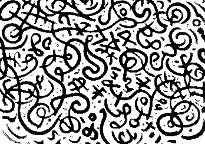

ə e ∗: generi e grafemi. Un intervento della Crusca e una nota sull’aleph

Basta con asterischi e altri scarabocchi da cattivi scriventi! L’italiano ha due generi grammaticali, il maschile e il femminile, ma non il neutro, così come, nella categoria grammaticale del numero, distingue il singolare dal plurale, ma non ha il duale. E, laddove sesso biologico e identità di genere costituiscono realtà diverse dal genere grammaticale, diventa prioritario contenere le derive progressiste e il loro inflessibile determinismo linguistico che moltiplica parole e lettere pur impoverendo le cose. Questo accade quando i rapporti di oggettivizzazione che identificano tra di loro linguaggio pensiero e realtà arrivano ad escludere ogni autentica forma di differenza, rendendo così l’inclusività una forma di isteria paronoide. Infatti, asterischi e altri grafemi introducono surrettiziamente nell’alfabeto artifici linguistici, le cui inadeguatezze contribuiscono ad un’opacizzazione della lingua che, laddove l’emissione fonetica si identifica con un segno scritto che assume valore di determinazione, rende il pensiero più torbido. Consegnato alla cabala invertita di un linguaggio cibernetico che perde in essenzialismo per scoprirsi indispensabilie nel fondare un universo di riferimento assolutista. L’operazione corona le pretese politically correct e porta il radicalismo di maniera della Theory a livelli di superstizione paranoide. Insomma, può serenamente essere ammesso che l’uso del maschile non marcante e quello del femminile plurale, e tutte le alternative grammaticali interne al sistema messe in fila, hanno meno colpe dello schwa.
L’uso di tale segno sembrerebbe alludere alla ‘differance’ di Derrida, e tuttavia ne è molto lontano. Il filosofo legge ‘difference’ sostituendo alla ‘e’ una ‘a’, vocale muta e nascosta, non fonetica e puramente grafica: ciò significa che all’origine della differenza tra grafico e fonetico non c’è niente di fonetico o di grafico, e la non-ovvietà del segno destituisce l’assunto che le cose abbiano come modalità primaria il loro semplice essere presenti. La scrittura fa comprendere come quanto esista guardi oltre sé, in ascolto dell’impercettibile, aprendo all’illimitatezza: all’«inconcepibile universo» che Borges intravide nell’aleph. Prima lettera dell’alfabeto ebraico. L’ain sof della Cabala. Invece, il segno fonetico ə, dal tedesco Schwa e quindi dall’ebraico shĕvā, che significa “insignificante”, indica il suono vocalico medio del parlato, in alcune lingue propriamente impercettibile e non in tutte diffuso; nel rivendicare valore di presenza, fondamento, identità assolute, eppure riferibile ad ogni cosa, esso non diventa affatto infinite cose, ma piuttosto si annulla a riflesso di una neolingua apparentemente accomodante ma rigidamente normativa. E nel mondo dei gesti quotidiani, nel quale sussiste un problema di semplice pronuncia, dire ‘ciao a tutti e tutte’, o il contrario, è pur sempre preferibile che inciampare su parole mozzate da segni impronunciabili che inibiscono il pensiero e paralizzano l’azione. Ok ragazzi? E chi ancora non ha capito, una consulenza della Crusca!
È ormai divenuto molto alto il numero dei quesiti pervenutici su temi legati al genere: uso dell’asterisco, dello schwa o di altri segni che “opacizzano” le desinenze maschili e femminili; possibilità per l’italiano di ricorrere a pronomi diversi da lui/lei o di “recuperare” il neutro per riferirsi a persone che si definiscono non binarie; genere grammaticale da utilizzare per transessuale e legittimità stessa di questa parola. Cercheremo in questo intervento di affrontare le diverse questioni.
Premessa
Le domande che ci sono state poste sono tante e toccano argomenti abbastanza diversi tra loro. Abbiamo preferito raccoglierle tutte insieme perché c’è un tema di fondo che le accomuna: la questione della distinzione di genere, anche al di là della tradizionale opposizione tra maschile e femminile. Anzitutto, due precisazioni: 1) tratteremo esclusivamente delle questioni poste dalle varie domande che ci sono pervenute, senza tener conto dei numerosissimi interventi sul tema, che ormai da vari mesi alimenta discussioni e polemiche anche molto accese sulla stampa e soprattutto in rete; 2) la nostra risposta investe il piano strettamente linguistico, con riferimento all’italiano (non potrebbe essere che così, del resto, visto che le domande sono rivolte all’Accademia della Crusca, ma ci pare opportuno esplicitarlo). Ci sembra doveroso premettere ancora una cosa: la maggior parte di coloro che ci hanno scritto – anche chi esprime la propria contrarietà all’uso di asterischi o di altri segni estranei alla tradizionale ortografia italiana – si mostra non solo contraria al sessismo linguistico e rispettosa nei confronti delle persone che si definiscono non binarie, ma anche sensibile alle loro esigenze. E questo è senz’altro un dato confortante, che va messo in rilievo.
Genere naturale e genere grammaticale
Per impostare correttamente la questione dobbiamo dire subito che il genere grammaticale è cosa del tutto diversa dal genere naturale. Lo rilevavano nel 1984, a proposito del francese, Georges Dumézil e Claude Lévi-Strauss, incaricati dall’Académie Française di predisporre un testo su “La féminisation des noms de métiers, fonctions, grades ou titres” (‘la femminilizzazione dei nomi di mestieri, funzioni, gradi o titoli’). Non entriamo qui nella tematica della distinzione tra sesso biologico e identità di genere, su cui torneremo, almeno marginalmente, più oltre; ci limitiamo a ricordare che negli studi di psicologia e di sociologia il genere indica l’“appartenenza all’uno o all’altro sesso in quanto si riflette e connette con distinzioni sociali e culturali” (questa la definizione del GRADIT); tale accezione del termine, relativamente recente, è calcata su uno dei significati del corrispondente inglese gender, quello che indica appunto l’appartenenza a uno dei due sessi dal punto di vista culturale e non biologico (gli studi di genere o gender studies sono nati negli Stati Uniti negli anni Settanta, su impulso dei movimenti femministi).
Che il genere come categoria grammaticale non coincida affatto con il genere naturale si può dimostrare facilmente: è presente in molte lingue, ma ancora più numerose sono quelle che non lo hanno; può inoltre prevedere, nei nomi, una differenziazione in classi che in certi casi non sfrutta e in altri va ben oltre la distinzione tra maschile e femminile propria dell’italiano (dove riguarda anche articoli, aggettivi, pronomi e participi passati) perché, oltre al neutro (citato in molte domande pervenuteci, evidentemente sulla base della conoscenza del latino), esistono, in altre lingue, vari altri generi grammaticali, determinati da criteri ora formali ora semantici; infine, come avviene in inglese, può limitarsi ai pronomi, senza comportare quell’alto grado di accordo grammaticale che l’italiano prevede.
Neppure in italiano si ha una sistematica corrispondenza tra genere grammaticale e genere naturale. È indubbio che, in particolare quando ci si riferisce a persone, si tenda a far coincidere le due categorie (abbiamo coppie come il padre e la madre, il fratello e la sorella, il compare e la comare, oppure il maestro e la maestra, il principe e la principessa, il cameriere e la cameriera, il lavoratore e la lavoratrice, ecc.), ma questo non vale sempre: guida, sentinella e spia sono nomi femminili, ma indicano spesso (anzi, più spesso) uomini, mentre soprano e contralto sono, tradizionalmente almeno (oggi il femminile la soprano è piuttosto diffuso), nomi maschili che da oltre due secoli si riferiscono a cantanti donne. Arlecchino è una maschera, come Colombina (anche se Carlo Goldoni nelle Donne gelose gli fa usare il maschile màscaro e nei Rusteghi le donne in scena parlano di màscara omo per riferirsi al conte Riccardo e si rivolgono con siora màscara dona a Filippetto, entrato a casa di Lunardo in abiti femminili), mentre Mirandolina è un personaggio, come il Cavaliere di Ripafratta, che di lei si innamora. Vero è che nel parlato spostamenti di genere nell’àmbito dei nomi in rapporto al sesso del referente ci sono stati: da modello si è avuto modella (cfr. Anna M. Thornton, La datazione di modella, in “Lingua nostra”, LXXVI, 2015, pp. 25-27); si parla di un tipo ‘un tale’ ma anche di una tipa (Miriam Voghera, Da nome tassonomico a segnale discorsivo: una mappa delle costruzioni di tipo in italiano contemporaneo, in “Studi di Grammatica Italiana”, XXIII, 2014, pp. 197-221); accanto a membro si sta diffondendo membra (Anna M. Thornton, risposta nr. 7, in “La Crusca per voi”, 49, 2014, pp. 14-15); dall’altra parte, dal femminile figura deriva il maschile figuro (ma con una connotazione negativa). Abbiamo poi i cosiddetti nomi “di genere comune”, che non cambiano forma col cambio di genere, perché la distinzione è affidata agli articoli nei casi di cantante, preside, custode, consorte, coniuge (con cui molti di noi hanno familiarizzato attraverso la denuncia dei redditi, che parla ellitticamente di dichiarante e di coniuge dichiarante senza precisare i rispettivi sessi). Passando al mondo animale, distinguiamo, è vero, il montone o ariete e la pecora (ma il plurale le pecore si riferisce spesso al gregge e comprende quindi anche i montoni), il gatto e la gatta, il gallo e la gallina, il leone e la leonessa, ma nella maggior parte dei casi il nome, maschile o femminile che sia, indica tanto il maschio quanto la femmina (la lince, il leopardo, la iena, la volpe, il pappagallo, la gazza, il gambero, la medusa, ecc., nomi che la tradizione grammaticale indica come “epiceni”; lasciamo da parte l’esistenza di formazioni occasionali come il tartarugo e il ricorso non alla flessione, ma alla tecnica analitica, come in la tartaruga maschio, che è sicuramente possibile, ma marginale all’interno del sistema). Quanto alle cose inanimate, è evidente che il genere femminile di sedia, siepe, crisi e radio e il maschile di armadio, fiore, problema e brindisi non si possano legare in alcun modo al sesso, che le cose naturalmente non hanno.
Il neutro
Chi, tra coloro che ci hanno scritto, propone di far ricorso al neutro per rispettare le esigenze delle persone che si definiscono non binarie, citando il latino, non tiene presente da un lato che l’italiano, diversamente dal latino, non dispone di elementi morfologici che possano contrassegnare un genere diverso dal maschile e dal femminile, dall’altro che in latino (e in greco) il neutro non si riferisce se non eccezionalmente a esseri umani (accade con alcuni diminutivi di nomi propri) e neppure agli dei: venus, -eris ‘bellezza, fascino’ (da cui venustas), che era neutro come genus, -eris, diventò femminile come nome proprio di Venere, la dea della bellezza. D’altra parte, per venire all’attualità, anche in inglese il rifiuto dei pronomi he (maschile) e she (femminile) da parte delle persone non binarie non ha comportato l’adozione del pronome neutro it, presente in quella lingua ma evidentemente inutilizzabile con riferimento a esseri umani, bensì l’uso del “singular they”, cioè del pronome plurale ambigenere they (e delle forme them, their, theirs e themself/themselves), come pronome singolare non marcato. Anche l’introduzione in svedese nel 2012, accanto al pronome maschile han e al femminile hon, del pronome hen, usato per esseri umani in cui il sesso non è definito o non è rilevante, si inserisce senza difficoltà nel sistema di quella lingua, in cui un genere “comune” (o “utro”), che non distingue tra maschile e femminile, si contrappone al genere neutro e l’opposizione tra maschile e femminile si ha solo nei pronomi personali di terza persona singolare.
Il maschile plurale come genere grammaticale non marcato
Un altro dato da ricordare è che nell’italiano standard il maschile al plurale è da considerare come genere grammaticale non marcato, per esempio nel caso di participi o aggettivi in frasi come “Maria e Pietro sono stanchi” o “mamma e papà sono usciti”. Inoltre, se dico “stasera verranno da me alcuni amici” non significa affatto che la compagnia sarà di soli maschi (invece se dicessi “alcune amiche”, si tratterebbe soltanto di donne). Se qualcuno dichiara di avere “tre figli”, sappiamo con certezza solo che tra loro c’è un maschio (diversamente dal caso di “tre figlie”), a meno che non aggiunga “maschi” (cfr. l’intervento di Anna M. Thornton sul Magazine Treccani). Se in passato poteva capitare (oggi mi risulta che avvenga più di rado) che a un alunno indisciplinato si richiedesse di tornare a scuola il giorno dopo “accompagnato da uno dei genitori”, poteva essere sia il papà sia la mamma a farlo (e lo stesso valeva nel caso della dicitura al singolare, “da un genitore”, sebbene questo termine abbia anche il femminile genitrice, di uso peraltro assai più raro rispetto al maschile).
Lingue naturali, processi di standardizzazione e dirigismo linguistico
C’è poi un’altra questione di carattere generale che va tenuta presente: ogni lingua, a meno che non si tratti di un sistema “costruito a tavolino” come sono le lingue artificiali (un esempio ne è l’esperanto), è un organismo naturale, che evolve in base all’uso della comunità dei parlanti: è vero che molte lingue hanno subìto un processo di standardizzazione per cui, tra forme coesistenti in un certo arco temporale, alcune sono state selezionate, considerate corrette e destinate allo scritto e all’uso formale e altre censurate e giudicate erronee, o ammesse solo nel parlato o in registri informali e colloquiali; ma in questo processo la scelta (che può anche cambiare nel corso del tempo) avviene sempre nell’àmbito delle possibilità offerte dal sistema. Soltanto nel caso della scrittura (che infatti non si apprende naturalmente, ma va insegnata) è possibile imporre norme ortografiche che si discostino dalla pronuncia reale: per questo la stampa e la scuola hanno avuto e hanno tuttora un ruolo fondamentale nella costituzione della norma standard scritta. Non c’è dunque da meravigliarsi se alcune proposte di soluzione del problema della distinzione di genere abbiano riguardato, almeno in prima istanza, la grafia, più suscettibile di cambiamenti. Ma ormai da tempo l’ortografia italiana è da considerarsi stabilizzata, il rapporto tra grafia e pronuncia non presenta particolari difficoltà (basta prendere a confronto l’inglese e il francese) e i dubbi si concentrano quasi esclusivamente sull’uso dei segni paragrafematici (accenti, apostrofi, ecc.). Questo non esclude che, almeno in àmbiti molto precisi come la scrittura in rete e quella dei messaggini telefonici, si possano diffondere usi grafici particolari, spesso peraltro transitori; ma il legame sistematico tra grafia e pronuncia, così tipico dell’italiano, non dovrebbe essere spezzato. In ogni caso, la storia ci ha offerto non di rado, anche di recente (in altri Paesi), esempi di riforme ortografiche dovute a interventi dell’autorità pubblica. Ogni tanto, specie nei regimi totalitari, la politica è intervenuta anche ad altri livelli della lingua, ma quasi mai è andata a violare il sistema. E poi il “dirigismo linguistico” (di cui, secondo alcuni, anche il “politicamente corretto” raccomandato alla pubblica amministrazione costituirebbe una manifestazione) assai di rado ha avuto effetti duraturi. Al riguardo possiamo citare un caso che entra, se pure lateralmente, proprio nella questione che stiamo trattando: quello degli allocutivi.
Gli allocutivi (tu, voi, lei) e la tematica del genere
Il latino conosceva un unico pronome per rivolgersi a un singolo destinatario, maschio o femmina che fosse: tu (al nominativo e al vocativo; tui, al genitivo; tibi, al dativo; te, all’accusativo e ablativo) e l’uso si è conservato, praticamente senza soluzione di continuità, a Roma, nel Lazio e lungo la corrispondente dorsale appenninica. In età imperiale cominciò a diffondersi il vos come forma di rispetto, da cui il voi dell’italiano antico, vivo tuttora in area meridionale. In età rinascimentale, sull’onda della diffusione (per influsso dello spagnolo) di titoli come vostra eccellenza, vostra signoria, vostra maestà, ci fu un altro cambiamento e si iniziò a usare, come forma di cortesia, anche il lei (ella, per la verità, almeno all’inizio, come soggetto e nell’uso allocutivo), che prima affiancò (a un livello di maggiore formalità) il voi e poi, in età contemporanea, ha finito col sostituirlo. Il fascismo cercò invano di bandire l’uso del lei (considerato uno “stranierismo” proprio della “borghesia”) e di imporre l’“autoctono” voi. Col crollo del regime, il voi è restato, come si è detto, solo nell’uso meridionale (dove il lei aveva avuto minore diffusione) ed è piuttosto l’espansione del tu generalizzato a contrastare il lei di cortesia, che peraltro resiste benissimo in situazioni anche solo mediamente formali.
Proprio il lei di cortesia ci documenta un’altra mancata corrispondenza tra genere grammaticale e genere naturale. Lei è un pronome femminile, ma lo si dà anche a uomini (lei è un po’ pigro, signore!. come lei è un po’ pigra, signora!); non solo, ma quando si usano le corrispondenti forme atone la e le l’accordo al femminile investe spesso anche il participio o l’aggettivo. Se è normale, rivolgendosi a un docente di sesso maschile, dire professore, oggi vedo che è molto occupato, si dice però comunemente professore, l’ho vista ieri (e non l’ho visto ieri) entrare in biblioteca. Insomma, anche l’allocutivo di cortesia dello standard è un esempio di come il maschile e il femminile grammaticali non corrispondano sempre, neppure in italiano, ai generi naturali.
La lingua tra norma, sistema e scelte individuali
Chi si rivolge all’Accademia della Crusca (la quale peraltro non ha alcun potere di indirizzo politico, diversamente dall’Académie Française e dalla Real Academia Española, che hanno un ruolo ben diverso sul piano istituzionale) pensa alla lingua considerando la “norma” in senso prescrittivo (in molti quesiti ricorrono infatti parole come corretto e correttezza, propri della grammatica normativa e scolastica) oppure facendo riferimento agli usi istituzionali dell’italiano, non all’uso individuale di singoli o di gruppi ristretti. Ma neppure in questo secondo caso le scelte sono completamente libere, perché chi parla o scrive deve comunque far riferimento a un sistema di regole condiviso, in modo da farsi capire e accettare da chi ascolta o legge. Si può segnalare, per dimostrare la libertà che è concessa alle scelte individuali (specie nel caso della lingua letteraria), un passo di Luigi Pirandello che gioca sul genere grammaticale di una coppia di parole come moglie e marito (e non importa ora il suo possibile inserimento in una tradizione letteraria misogina ben nota). Il brano è citato in un importante studio della compianta accademica Maria Luisa Altieri Biagi (La lingua in scena, Bologna, Zanichelli, 1980, p. 173), una dei “maestri” della linguistica italiana (usiamo intenzionalmente il maschile plurale, che in questi casi, a nostro parere, è quasi una scelta obbligata per indicare un’eccellenza femminile in un ambiente a maggioranza maschile):
Il protagonista di Acqua amara ha le sue idee, in fatto di morfologia. Se toccasse a lui modificarla, la adeguerebbe a una sua sofferta esperienza di vita:
Crede lei che ci siano due soli generi, il maschile e il femminile? Nossignore. La moglie è un genere a parte; come il marito, un genere a parte […] Se mi venisse la malinconia di comporre una grammatica ragionata, come dico io, vorrei mettere per regola che si debba dire: il moglie; e, per conseguenza, la marito. (Nov., I, p. 274).
La mozione
La norma dell’italiano contempla un’ampia gamma di possibilità nel caso della mozione, cioè del cambiamento di genere grammaticale di un nome in rapporto al sesso. È un tema che sulle pagine del sito della nostra Consulenza è stato spesso affrontato perché moltissime sono le domande che sono arrivate e che continuano ad arrivare a proposito dei femminili di professioni e cariche espresse al maschile dato che in passato erano riservate solo a uomini. La scelta per il femminile, che l’Accademia ha più volte caldeggiato, non viene sempre accolta dalle stesse donne, tra cui non mancano quelle che preferiscono definirsi architetto, avvocato, sindaco, ministro, assessore, professore ordinario, il e non la presidente, ecc. D’altra parte, se storicamente è indubitabile che molti nomi femminili di questo tipo siano derivati da preesistenti nomi maschili (ciò vale pure per signora rispetto a signore), abbiamo anche casi di nomi maschili come divo nel mondo dello spettacolo, prostituto, casalingo, che sono documentati dopo i corrispondenti femminili, di cui vanno considerati derivati (per un’esemplare trattazione del fenomeno rinvio ad Anna M. Thornton, Mozione, in Grossmann-Rainer 2004, pp. 218-227).
Transessuale, transgenere e transizionante
L’unico problema relativo alla scelta del genere di un nome che ci è stato sottoposto è quello di transessuale per indicare “chi ha assunto mediante interventi chirurgici i caratteri somatici del sesso opposto” (anche questa definizione è del GRADIT). Qui, in effetti, si assiste tuttora a un’oscillazione tra maschile e femminile (a partire dall’articolo che precede il nome). A nostro parere, sarebbe corretta (e rispettosa) una scelta conforme al genere sessuale “d’arrivo” e dunque una transessuale se si tratta di un maschio diventato femmina, un transessuale, se di una femmina diventata maschio, posto che proprio si debba sottolineare l’avvenuta “trasformazione”. Qualcuno ci ha fatto notare che sarebbe opportuno sostituire transessuale con transgenere, che non è propriamente l’equivalente dell’inglese transgender, perché ha implicazioni diverse sul piano medico e giuridico. È senz’altro così e pensiamo anche noi che questo termine (da usare tanto al maschile quanto al femminile con le avvertenze appena indicate per transessuale) sia più appropriato, ma sta di fatto che al momento risulta meno diffuso: stenta a trovare accoglienza anche nella lessicografia e comunque, nelle poche occasioni in cui è registrato, viene spiegato come un’italianizzazione della voce inglese, che, come capita spesso, viene ad esso preferita ed è infatti presente in molti più dizionari. Alcuni di essi registrano anche cisgender, nel senso di ‘individuo nel quale sesso biologico e identità di genere coincidono’, il cui corrispondente italiano, cisgenere, ha invece, al momento, soltanto attestazioni in rete.
Ci è inoltre pervenuta una richiesta di sostituire gli aggettivi omosessuale, eterosessuale, bisessuale, pansessuale e transessuale con omoaffettivo, eteroaffettivo, biaffettivo, panaffettivo e transizionante e al riguardo, dopo aver fatto rilevare al richiedente che nessuna parola entra nei vocabolari per decisione di una istituzione, seppur prestigiosa come l’Accademia della Crusca, ma deve prima entrare nell’uso della comunità dei parlanti (non di un singolo parlante) e mettervi radici, segnaliamo che omoaffettivo è già presente nella lessicografia italiana (il GRADIT lo registra e lo data al 2004), come pure il verbo transizionare (documentato dal 1999), nel senso di “compiere un percorso di cambiamento del sesso attraverso terapie ormonali, forme di supporto psicologico, interventi di chirurgia estetica e di riassegnazione chirurgica del sesso” (ancora GRADIT).
Quale pronome per chi si considera gender fluid?
Tornando al genere grammaticale, diverso è il caso di chi si considera gender fluid, cioè, per usare la definizione dello Zingarelli 2022 (che include questa locuzione aggettivale s.v. gender, molto ampliata rispetto allo Zingarelli 2021), “di persona che rifiuta di identificarsi stabilmente con il genere maschile e femminile (comp. con fluid ‘mutevole’)“. Il problema che ci è stato sottoposto per queste persone riguarda prevalentemente il genere del pronome da utilizzare per riferirsi ad esse.
Ebbene, di fronte a domande come la seguente: “Come dovrei rivolgermi nella lingua italiana a coloro che si identificano come non binari? Usando la terza persona plurale o rivolgendomi col sesso biologico della persona però non rispettando il modo di essere della persona?”, la nostra risposta è questa: l’italiano – anche se non ha un pronome “neutro” e non consente neppure l’uso di loro in corrispondenza di they/them dell’inglese (lingua in cui l’accordo ha un peso molto meno rilevante rispetto all’italiano e dove comunque l’uso di they al singolare per persone di cui si ignora il sesso costituiva una possibilità già prevista dal sistema, in quanto documentata da secoli) – offre tuttavia il modo di non precisare il genere della persona con cui o di cui si sta parlando. L’unica avvertenza sarebbe quella di evitare articoli, aggettivi della I classe, participi passati, ecc., scelta che peraltro (come ben sanno coloro che hanno affrontato la tematica del sessismo linguistico) è certamente onerosa. In ogni caso, tanto il pronome io quanto l’allocutivo tu (e, come si è visto sopra, anche gli allocutivi di cortesia lei e voi) non specificano nessun genere. Analogamente, i pronomi di terza persona lui e lei in funzione di soggetto possono essere omessi (in italiano non è obbligatoria la loro espressione, a differenza dell’inglese e del francese) oppure sostituiti da nomi e cognomi, tanto più che oggi sono in uso accorciamenti ipocoristici ambigeneri come Fede (Federico o Federica), Vale (Valerio o Valeria), ecc., e che (anche sul modello dell’inglese e proprio in un’ottica non sessista) si tende a non premettere l’articolo femminile a cognomi che indicano donne (Bonino e non la Bonino). Si potrebbe aggiungere che il clitico gli, maschile singolare nello standard, nel parlato non formale si usa anche al posto del femminile le e che l’opposizione è neutralizzata per combinazioni di clitici come glielo, gliela, gliene; anche l’elisione, nel parlato più frequente che non nello scritto, ci consente spesso di eliminare la distinzione tra lo e la. Insomma, il sistema della lingua può sempre offrire alternative perfettamente grammaticali a chi intende evitare l’uso di determinate forme ed è disposto a qualche dispendio lessicale o a usare qualche astratto in più pur di rispettare le aspettative di persone che si considerano non binarie. Certamente l’accordo del participio passato costituisce un problema; ma non c’è, al momento, una soluzione pronta: sarà piuttosto l’uso dei parlanti, nel tempo, a trovarla.
Ancora sul maschile plurale come genere grammaticale non marcato
Diverso è il caso dei plurali: qui, come, si è detto all’inizio, il maschile non marcato, proprio della grammatica italiana, potrebbe risolvere tutti i problemi, comprendendo anche le persone non binarie. A nostro parere, mentre è giusto che, per esempio, nei bandi di concorso, non compaia, al singolare, “il candidato” ma si scriva “il candidato o la candidata”, oppure “la candidata e il candidato” (per abbreviare si ricorre spesso anche alla barra, che tuttavia non raccomanderemmo: “il/la candidato/a”), il plurale “i candidati” è accettabile perché, sul piano della langue, non esclude affatto le donne. Niente tuttavia impedisce di optare anche al plurale per “i candidati e le candidate” o viceversa (oppure, anche in questo caso, “i/le candidati/e”); vero è che da queste formulazioni potrebbero sentirsi escluse le persone non binarie. Aggiungiamo, rispondendo così ad alcuni specifici quesiti, che la scelta del plurale maschile nello standard non dipende dalla numerosità dei maschi rispetto alle femmine all’interno di un gruppo: basta una sola presenza maschile a determinarlo, ma non si tratterebbe di una scelta sessista (come viene invece considerata da molte donne), bensì dell’opzione per una forma “non marcata” sul piano del genere grammaticale. Capita peraltro abbastanza spesso, come ha notato qualcuno, che “nel caso di infermiere e maestre d’asilo” (o di altri gruppi professionali in cui la presenza femminile è preponderante) “si dirà ‘salve a tutte!’ e i pochi maschi se ne fa[ra]nno una ragione”. E questo, a nostro parere, “ci sta”, anche se, di fatto, spesso i maschi presenti protestano. Da richiamare è anche il fatto che, soprattutto nel parlato, l’accordo del participio o dell’aggettivo può riferirsi al genere grammaticale del nome ad essi più vicino: quindi “le mamme e i papà sono pregati di aspettare i figli fuori” (e non “sono pregate”), ma “i papà e le mamme sono pregati”, ma anche “sono pregate”.
La presenza del femminile plurale
Affiancare al maschile il femminile è senz’altro lecito e anzi, in certi contesti, sembra l’opzione preferibile (per esempio quando si indicano categorie professionali in cui la mozione al femminile ha stentato a imporsi). Nelle forme allocutive, in particolare, rappresenta indubbiamente, specie se a parlare o a scrivere è un maschio, un segnale di attenzione per le donne: bene dunque, per formule come care amiche e cari amici, cari colleghi e care colleghe, cari soci e care socie, carissime e carissimi, ecc. Anche nella tradizione dello spettacolo, del resto, chi presenta si rivolge al pubblico con signore e signori e i politici, specie in vista delle elezioni, parlano di elettori ed elettrici, cittadini e cittadine, ecc. Si ha poi il caso di nomi “esclusivamente” maschili come fratelli, a cui - visto che l’italiano non dispone di un termine corrispondente all’inglese sibling - è sempre opportuno affiancare sorelle (lo ha fatto del resto di recente anche la Chiesa, nella liturgia). Lasciamo da parte, per non dilungarci ulteriormente, il caso di uomini, già ampiamente trattato negli studi, a cui, in una prospettiva non sessista, si preferisce persone (altro nome femminile che può indicare anche un maschio pure al singolare).
Dall’asterisco…
L’accostamento del femminile al maschile finisce spesso con l’allungare e appesantire il testo. Forse anche per evitare questo, ormai da vari anni, soprattutto da quando si è diffusa la scrittura al computer, ha gradualmente preso piede, in particolari àmbiti (tra cui la posta elettronica), l’uso dell’asterisco, che è andato progressivamente a sostituire la barra (già citata per candidati/e), il cui uso sembra ormai confinato ai testi burocratici.
L’asterisco (dal gr. asterískos ‘stelletta’, dim. di astḗr ‘stella’) – che nel titolo di questa risposta abbiamo usato invece nel senso di ‘nota’, ‘stelloncino’, significato che è, o era, diffuso nel linguaggio giornalistico - è un “segno tipografico a forma di stelletta a cinque o più punte” (Zingarelli 2022) usato, sempre in esponente (“apice”, nella terminologia della videoscrittura), con varie funzioni. Anzitutto, serve a mettere in evidenza qualcosa, per esempio un nome o un termine in un elenco, contrassegnandolo così rispetto agli altri. L’asterisco può anche segnalare una nota (soprattutto se isolata) o ancora (per lo più ripetuto due o tre volte) indicare un’omissione volontaria da parte dell’autore, specialmente di un nome proprio: si incontra non di rado, per esempio, nei Promessi Sposi perché Alessandro Manzoni usa tre asterischi per non esplicitare il nome del paese dove vivono Renzo e Lucia, il casato dell’Innominato, ecc. Un uso per certi versi analogo si ha nei fumetti e in rete, dove gli asterischi o altri segni (chiocciola, cancelletto, punto) sostituiscono le lettere interne delle parolacce, che vengono così censurate. In linguistica, infine, l’asterisco contrassegna forme non attestate o agrammaticali.
Nell’àmbito di cui ci stiamo occupando l’asterisco, in fine di parola, sostituisce spesso la terminazione di nomi e aggettivi per “neutralizzare” (o meglio “opacizzare”; in questo forse si può intravedere un sia pur tenue legame con la penultima funzione prima indicata) il genere grammaticale: abbiamo così forme come car* collegh* e, particolarmente frequente, car* tutt*, probabile calco su dear all (che invece non ha bisogno di asterischi perché l’inglese non ha genere grammaticale né accordo su articoli e aggettivi). L’asterisco negli ultimi anni ha conquistato anche i sostenitori del cosiddetto linguaggio gender neutral e non c’è dubbio che anche sotto questo aspetto possa avere una sua funzionalità. Tuttavia coloro che ci hanno scritto, pur se disponibili alle innovazioni, si dichiarano per lo più ostili all’asterisco: c’è chi parla di “insulto” alla nostra lingua, chi di “storpiatura”, chi lo ritiene “sgradevole”, chi addirittura “un’opzione terribile”.
Di certo l’uso dell’asterisco è legato all’informatica, ma non ne rispetta i principi. È interessante, al riguardo, leggere quanto afferma un nostro lettore, docente appunto di informatica, che tratta della forma asteriscata (di cui, a suo parere si abusa), che è stata «presumibilmente mutuata dalle convenzioni dei linguaggi di comando dei sistemi operativi (Unix, ma anche DOS/Windows) per i quali la notazione * indica una sequenza di zero o più caratteri qualunque […]. Pertanto, nella sua semantica originaria “car* tutt*” ha la valenza (anche) di “carini tuttologi” o di “carramba tuttora” oltre ai significati ricercati dai “gender-neutral” che, tuttavia, costituiscono una infima parte di quelli possibili».
In effetti è così: in informatica l’asterisco segnala una qualunque sequenza di caratteri, mentre al posto di un solo carattere si usa il punto interrogativo, che (a parte gli altri problemi che comporterebbe) potrebbe andare bene per tutt? ma non per amic?, dove invece funzionerebbe meglio l’asterisco amic* perché nel femminile la -e è graficamente preceduta dall’h. Ma nessuno dei due simboli potrebbe essere usato in casi (che ci sono stati segnalati) come sostenitor* (o sostenitor?), che non include il femminile sostenitrici accanto al maschile sostenitori. E non è necessario né opportuno ricorrere all’asterisco (o al punto interrogativo) neppure per i plurali di nomi e aggettivi in cui la terminazione in -i vale per entrambi i generi (nomi citati sopra come cantanti, aggettivi plurali come forti, grandi, importanti, ecc.).
Comunque sia, pur con tutti questi distinguo, se consideriamo che l’uso grafico dell’asterisco si concentra in comunicazioni scritte o trasmesse che sono destinate unicamente alla lettura silenziosa e che hanno carattere privato, professionale o sindacale all’interno di gruppi omogenei (spesso anche sul piano ideologico), in tali àmbiti (in cui sono presenti abbreviazioni convenzionali come sg., pagg., f.to, estranee all’uso comune) può essere considerato una semplice alternativa alla sbarretta sopra ricordata, rispetto alla quale presenterebbe il vantaggio di includere anche le persone non binarie. L’asterisco non è invece utilizzabile, a nostro parere, in testi di legge, avvisi o comunicazioni pubbliche, dove potrebbe causare sconcerto e incomprensione in molte fasce di utenti, né, tanto meno, in testi che prevedono una lettura ad alta voce.
Resta, infatti, il problema dell’impossibilità della resa dell’asterisco sul piano fonetico: possiamo scrivere car* tutt*, ma parlando, se vogliamo salutare un gruppo formato da maschi e femmine senza usare il maschile inclusivo, dobbiamo rassegnarci a dire ciao a tutti e a tutte. Qualcuno ha proposto espressioni come caru tuttu, che a nostro parere costituiscono una delle inopportune (e inutili) forzature al sistema linguistico di cui si diceva all’inizio. Teniamo anche presente che nell’italiano tradizionale non esistono parole terminanti in -u atona (a parte cognomi sardi o friulani, come Lussu e Frau, il nome proprio Turiddu, diminutivo siciliano di Turi, ipocoristico di Salvatore, entrato anche in italiano grazie alla popolarità della Cavalleria rusticana di Pietro Mascagni e comunque ormai desueto, onomatopee come bau, sigle come ONU e IMU, forestierismi entrati di recente, come tofu o sudoku).
…allo schwa
In alternativa all’asterisco, specie con riferimento alle persone non binarie, è stato recentemente proposto di adottare lo schwa (o scevà), cioè il simbolo dell’Alfabeto Fonetico Internazionale (IPA) che rappresenta la vocale centrale propria di molte lingue e di vari dialetti italiani, in particolare quelli dell’area altomeridionale (il termine, grammaticalmente maschile, è di origine ebraica). Questa proposta, che sarebbe da preferire all’asterisco perché offrirebbe anche una soluzione sul piano della lingua parlata, ha già trovato vari sostenitori (sembra che l’abbiano adottata, almeno in parte, una casa editrice e un comune dell’Emilia-Romagna). A nostro parere, invece, si tratta di una proposta ancora meno praticabile rispetto all’asterisco, anche lasciando da parte le ulteriori difficoltà di lettura che creerebbe nei casi di dislessia.
Intanto, sul piano grafico va detto che mentre l’asterisco ha una pur limitata tradizione all’interno della scrittura, il segno per rappresentare lo schwa (la e rovesciata: ə, in corsivo ə, forse non di facilissima realizzazione nella scrittura corsiva a mano) è proprio, come si è detto, dell’IPA, ma non è usato come grafema in lingue che pure, diversamente dall’italiano, hanno lo schwa all’interno del loro sistema fonologico. Non a caso, a parte linguisti e dialettologi, coloro che scrivono in uno dei dialetti italiani che hanno lo schwa nell’inventario dei loro foni lo rendono spesso con e (talvolta con ë) o, impropriamente, con l’apostrofo. Se guardiamo al napoletano, che nella sua lunga tradizione di scrittura per le vocali atone finali si è allineato all’italiano, vediamo che oggi nelle scritte murali in dialetto della città la vocale atona finale viene sistematicamente omessa.
L’uso dello schwa non risolve neppure certe criticità che abbiamo già segnalato per l’asterisco: per esempio, sarebbero incongrue grafie come sostenitorə e come fortə, di cui pure ci è stato segnalato l’uso anche al singolare. C’è poi il problema, rilevato acutamente da qualche lettore, che del simbolo dello schwa non esiste il corrispondente maiuscolo e invece scrivere intere parole in caratteri maiuscoli può essere a volte necessario nella comunicazione scritta. C’è chi usa lo stesso segno, ingrandito, ma la differenza tra maiuscole e minuscole non è di corpo, ma di carattere e quindi accostare una E maiuscola all’inizio o nel corpo di una parola tutta scritta in maiuscolo a una ə alla fine della stessa non mi pare produca un bell’effetto. In alternativa, si potrebbe procedere per analogia e “rovesciare” la E, ma si tratterebbe di un ulteriore artificio, privo di riscontri – se non nella logica matematica, in cui il segno Ǝ significa ‘esiste’ (cosa che peraltro creerebbe, come nel caso dell’asterisco, un’altra “collisione” sul piano del significato) – e, presumibilmente, tutt’altro che chiaro per i lettori.
Quanto al parlato, non esistendo lo schwa nel repertorio dell’italiano standard, non vediamo alcun motivo per introdurlo o per accordare la preferenza a tuttə rispetto al tuttu che è stato sopra citato. Anche il riferimento ai sistemi dialettali ci sembra fallace perché nei dialetti spesso la presenza dello schwa limita, ma non esclude affatto la distinzione di genere grammaticale, che viene affidata alla vocale tonica, come risulta da coppie come, in napoletano, buόnə (maschile: ‘buono’ ma anche ‘buoni’) e bònə (femminile: ‘buona’ o ‘buone’), russə (‘rosso’ o ‘rossi’) e rόssə (‘rossa’ o ‘rosse’). Lo schwa opacizza invece spesso la differenza di numero, tanto che tra chi ne sostiene l’uso c’è stato chi ha proposto di servirsi di ə per il singolare e di ricorrere a un altro simbolo IPA, ɜ, come “schwa plurale” (altra scelta a nostro avviso discutibile, anche per la possibile confusione con la cifra 3).
Conclusioni
È giunto il momento di chiudere il discorso. È verissimo, come diceva Nanni Moretti in un suo film, che “le parole sono importanti” (ma lo sono anche la grafia, la fonetica, la morfologia, la sintassi) e denunciano spesso atteggiamenti sessisti o discriminatori, sia sul piano storico (per come le lingue si sono andate costituendo), sia sul piano individuale. Come abbiamo detto all’inizio, la quantità di richieste che abbiamo avuto, che ci hanno espresso dubbi e incertezze a proposito del genere e della distinzione di genere, ci rasserena, perché, soprattutto per come sono stati formulati i quesiti, documenta una larga diffusione di atteggiamenti di civiltà, di comprensione, di disponibilità. È senz’altro giusto, e anzi lodevole, quando parliamo o scriviamo, prestare attenzione alle scelte linguistiche relative al genere, evitando ogni forma di sessismo linguistico. Ma non dobbiamo cercare o pretendere di forzare la lingua – almeno nei suoi usi istituzionali, quelli propri dello standard che si insegna e si apprende a scuola – al servizio di un’ideologia, per quanto buona questa ci possa apparire. L’italiano ha due generi grammaticali, il maschile e il femminile, ma non il neutro, così come, nella categoria grammaticale del numero, distingue il singolare dal plurale, ma non ha il duale, presente in altre lingue, tra cui il greco antico. Dobbiamo serenamente prenderne atto, consci del fatto che sesso biologico e identità di genere sono cose diverse dal genere grammaticale. Forse, un uso consapevole del maschile plurale come genere grammaticale non marcato, e non come prevaricazione del maschile inteso come sesso biologico (come finora è stato interpretato, e non certo ingiustificatamente), potrebbe risolvere molti problemi, e non soltanto sul piano linguistico. Ma alle parole andrebbero poi accompagnati i fatti.
Materiali correlati
L’Accademia della Crusca e la questione del genere nella lingua, «Accademia della Crusca» 23.11.2023.
Webinar, La lingua italiana in una prospettiva di genere, 1.03.2022.
Cristiana De Santis, L’emancipazione grammaticale non passa per una e rovesciata, «Treccani Magazine - Lingua italiana» 9.02.2022.
•
Pubblicato come: Paolo D’Achille, Un’asterisco sul genere, «Accademia della Crusca» 24.09.2021.
Illustrazione: Sgrafemi (2024)